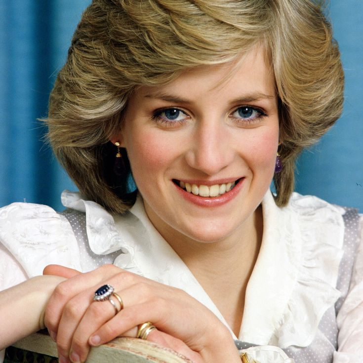

Voice coach Stewart Pearce, who worked with the princess until her death in 1997, reflects on his client’s spirituality, empathy, and the connections she would have with Harry and Meghan.
Diana's death : On Sunday, Aug 31, 1997, Diana, the Princess of Wales, died following a car crash in Paris. There was widespread public mourning at the death of this popular figure, culminating with her funeral at Westminster Abbey, on Sat, Sept 6, 1997.
Diana's childhood and teenage years : Diana, Princess of Wales, formerly Lady Diana Frances Spencer, was born on Jul 1, 1961 at Park House near Sandringham, Norfolk. She was the youngest daughter of the then Viscount and Viscountess Althorp, now the late (8th) Earl Spencer and the late Hon. Mrs Shand-Kydd, daughter of the 4th Baron Fermoy. Until her father inherited the Earldom, she was styled The Honourable Diana Spencer.
Marriage and family On 24 Feb, 1981, it was officially announced that Lady Diana was to marry The Prince of Wales. As neighbours at Sandringham until 1975, their families had known each other for many years, and Lady Diana and The Prince had met again when he was invited to a weekend at Althorp in November 1977.
Princess Diana's public role Her first tour with The Prince of Wales was a three-day visit to Wales in October 1981. In 1983 she accompanied the Prince on a tour of Australia and New Zealand, and they took the infant Prince William with them. Prince William, with Prince Harry, again joined The Prince and Princess of Wales at the end of their tour to Italy in 1985.
She was a school drop-out Princess Diana had a tough time with her academic curriculum. She struggled in school and although, she got many wonderful opportunities, she eventually dropped out.
Before dating Princess Diana, Prince Charles was dating her elder sister While it may come as a surprise to many of us, but Princess Diana met her future husband Prince Charles through her sister Sarah. At that time, Sarah and Charles were in a close companionship with one another.